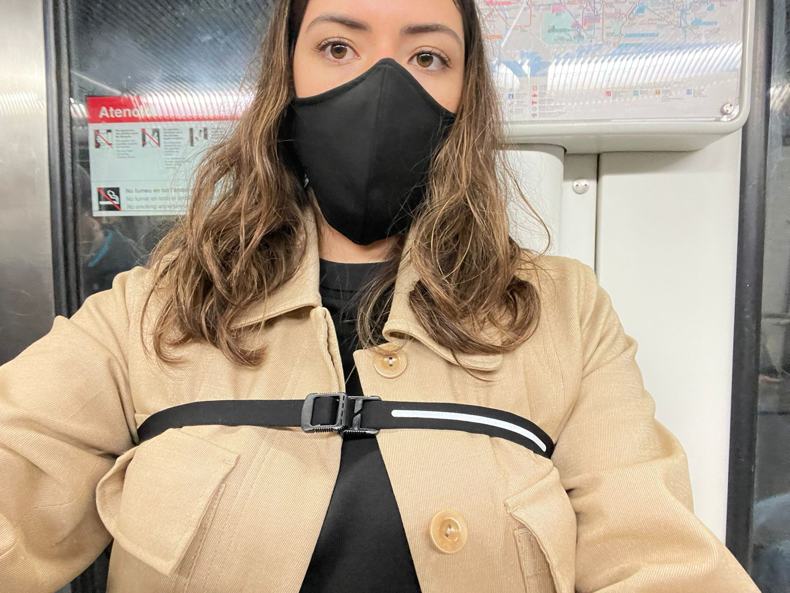

Week 2. Atlas of Weak Signals.
This second week we had the Atlas of Weak Signals course, which analyzes emerging issues that can be assessed and in which way they can be approached. This included a trip to Collserolla.
Read More
November 2, 2021
We first went to one of this warehouses where they drop off metal and other waste materials. It was somewhat overwhelming seeing all of this waste and not knowing what to do with it, also a bit intimidating to go inside and grab something hidden in there. We gave up and went to the streets to find something easier to work with that wasn't metal. I sneaked into one paper recycle bin and got out some coffe cup holders for everyone at class, ah and a hanger because why not.
After getting our materials ready we got our task. We had to prototype for our self portrait we made at the moment. I started by thinking what would people always say I'm lacking and that I agree with them in the end. This is naiveness. People usually tell me I trust people a lot and just go by living my day without a care. So my relatives and boyfriend are always telling me to watch out or putting me nervous because I have to always be super aware of my surroundings and you can't relax and enjoy even for a second. I decided to make some sort of goggles or glasses that alert you of your surroundings. They hipothetically work with sensors that analyze information around you like temperature, pheromones, tension, heartbeats and other factors that can determine if you are in danger or not. They have lenses you can turn to choose what environment or threat you want to analyze so you could choose from natural, human, machine and toxic. It also has a sensor in your forehead that perceives if you are nervous or your heartbeat accelerates and activates itself or can contact your emergency contact or service.

I know this is a hipothetical machine but I would really love to have this goggles in real life to feel safe. But on the other hand it would stress me out sometimes to be too aware of everything. I feel that you end up missing some other great spontaneous moments from everyday life. I really like what Kristina said about how we 'have to pay attention' which has the work 'pay' inscripted into the phrase. Meaning you don't get unlimited attention for just everything around you. There is a limit of things you can actually focus on, so it just depends on what are your main concerns or interests.
My classmates also came up with some really interesting magic machines, we discussed each of them and they ranged from personal path discoveries, challenges, growth, interaction with surrounding nature, building a home from within, having the ability to combine different types of knowledge for decision making, among others. As a collective on SolarPunk Futures we came to this reflection:
"The interventions in the group revolve around various discourses one makes, in search for identity of oneself. There is a shared common interest in finding a balance between the internal and the external parts of life. This balance is explored by different ways of engagement tied together by a common aspect of positionality."
From that exploration activity we set of to do our 1st person perspective on futures dcouting through making. This in relation to our design space or the topic we chose and designed the last class (in my case my security lenses). So I immediatly thought of doing my activation in a self reflexive way and as a challenge. This means understanding yourself in context. So I decided to walk around a neighborhood in Barcelona which is generally perceived as 'unsafe' to the general public. From the general conception they say it's because there are a lot of pickpocketers and people have gotten stolen or threatened.
So what I did was invite people on social media and some of my friends and family and asked them to join a zoom call with me while I was walking around Raval. I decided to strap my phone around my chest and have the display towards the street so that people could see I was in a zoom call with a lot of people. I told the participants to observe and count the number of a specific group of people they saw along my journey.This is me before attaching my phone with tape to my strap.
The categories I assigned and the participants are enlisted in the next slide.
This is the video of how everything went.
So after this experiment I went out and enlisted the numbers given to me by the participants which were the following.
This shows a huge majority in men. I started then thinking about the general conception of the neighborhood and why it is commonly perceived as unsafe. In this sense I believe that a minority of women, children and elders are directly related to a sense of insecurity in an area. Making the abundance of men a direct relation towards insecurity. This data gathered is very helpful in the study of how neighborhoods and cities are shaped and give certain image or identity. It is encrypted into our social biases and into our survival instincts to perceive things that make you scared or nervous or insecure. The way the neighborhood is also somewhat busy and full of people moving with different means of transportation switching from street to sidewalks can make you feel nervous.
I analyzed also the questions that arose from the experiment with the participants. I realized that they struggled to organize and observe their own category. Some of them counted more than one category and got the numbers mixed. Some others had trouble with using zoom or seeing the video. Also the quality of the video over zoom made it difficult for participants to differentiate gender or age.
There were some boundaries that were framing my experiment. With this I realized that it was a bit limited to specific streets and a specific time of day. Also the participants were bounded to their free time which in all cases wasn't for the full length of the experiment. Also the tools I used, in this case my phone with its built in camera and the quality of the zoom call which wasn't the optimal tool for visualization and people identification. In this context it is sort of related to biases of people.
Thinking on some ways I could have done this experiment differently I came to some variables that could've improved it or affected it.
After writing down some of my observations and process I came to reflect upon my experiment. I believe that what made it most relevant to me is the feeling I had while I was performing it. There was no other way of finding out how would it feel to walk a supposedly "unsafe neighborhood" without doing it myself and analyze more objectively my surroundings. I also realized that this experiment paved the way for some new questions and possible future prototypes. The thing about being my own instrument actually gabe me the control over what could happen. While I was walking and I had to choose between two streets I chose the one with more people or I turned the camera towards a dog so people could spot it, I walked besides some cops also to add to the count. All of this things in some sense were planned. I don't know if for a good or bad way but it definitely shaped my experiment.
After this experience I realized how important it is to try and prototype on the streets with real scenarios. This made me think of all of the hipothetical ideas I have sometimes in my mind but by having this sense of shame or fear of what other people might think I skip the prototyping experiments. Now I want to try out some qother ideas I have related to my design space and fights in order to get more relevant insights that can help me shape my project. Also, by watching some of my classmates videos I realized of so many things I didn't record or added to my video. Some stuff like the preparation of the experiment, some comments at the moment of action, some reactions of the people and also some explanations and text along the video. So I'm gonna make some changes to mine and insert more content that I think could be relevant to show my experiment.

15 january 2015 At 10:30 pm
Ne erat velit invidunt his. Eum in dicta veniam interesset, harum fuisset te nam ea cu lupta definitionem.
Reply
15 january 2015 At 10:30 pm
Ne erat velit invidunt his. Eum in dicta veniam interesset, harum fuisset te nam ea cu lupta definitionem.
Reply
15 january 2015 At 10:30 pm
Ne erat velit invidunt his. Eum in dicta veniam interesset, harum fuisset te nam ea cu lupta definitionem.
Reply
This second week we had the Atlas of Weak Signals course, which analyzes emerging issues that can be assessed and in which way they can be approached. This included a trip to Collserolla.
Read More
Week 3 was the introduction to biology. We learnt about microorganisms all around us and the composition behind them from cells to systems.
Read More
During this first week we got to know each other and the master's program. We learned about our own personal present skills and the future ones we want to obtain as well as our classmate's ones.
Read More